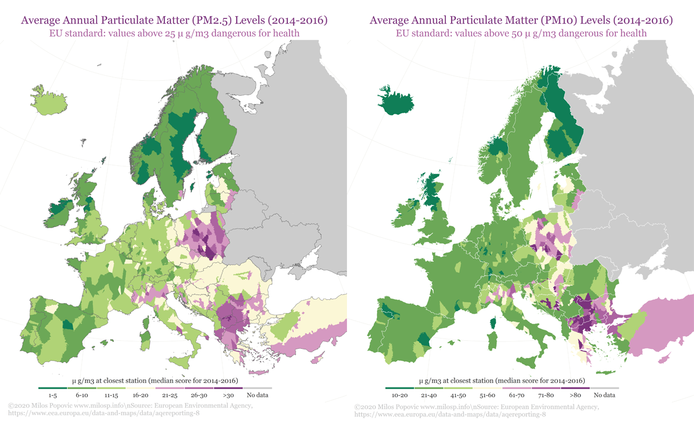
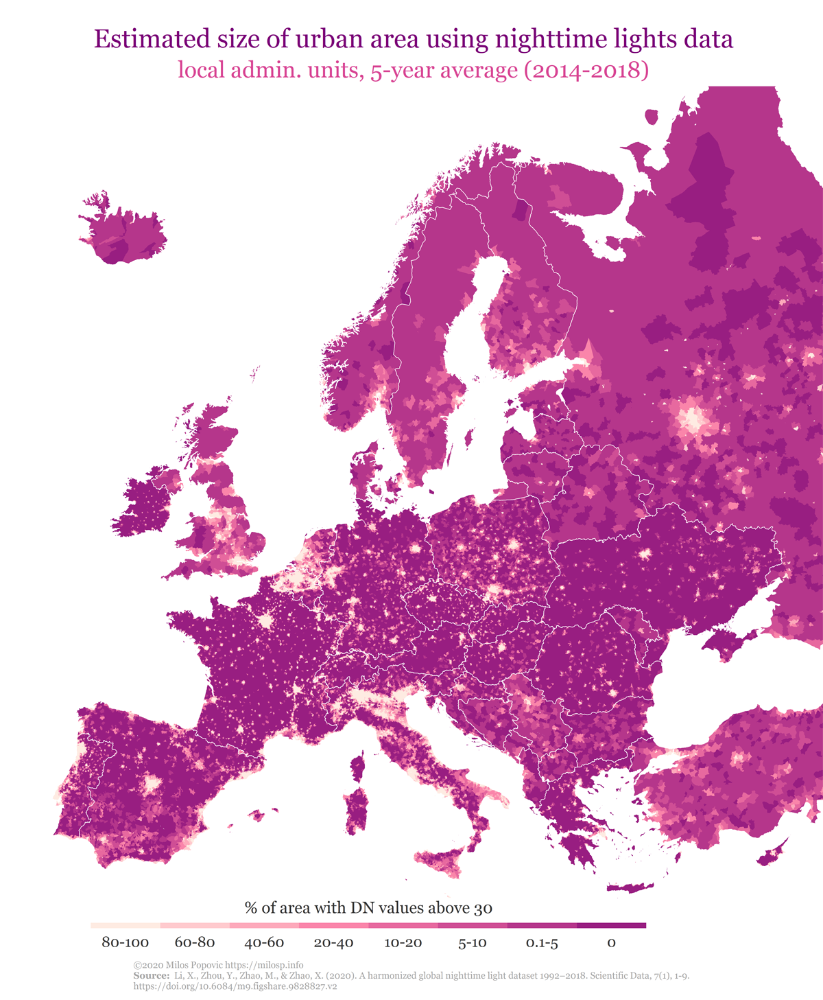
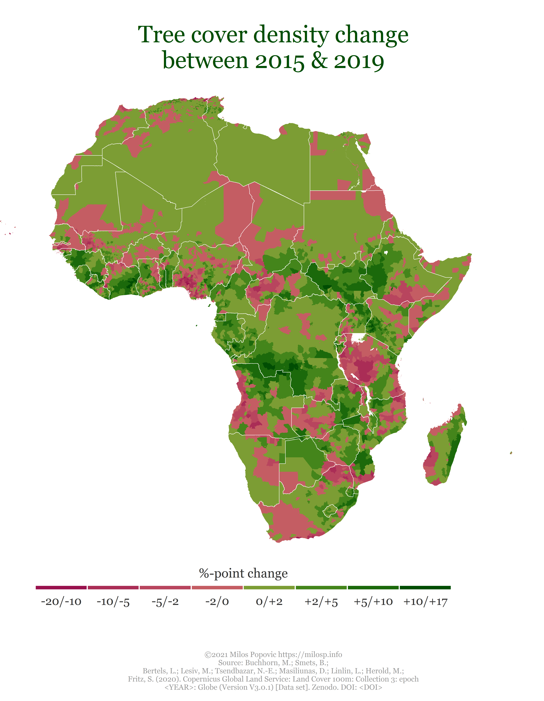

Connecting the Dots to Environmental Degradation Open Data
Harmonizing sub-national geographical information to join individual and socio-economic variables with satellite images.
If you live in a polluted area, does it mean that you take climate change seriously? Following the Reprex Open Data Day 2021, we embarked on a quest to explore this question using a unique combination of micro-level data from Eurobarometer surveys, Eurostat’s sub-national socio-economic data and satellite imagery from European Environmental Agency (EEA) and NASA. Before venturing forth into the forest of open data we, as all visual creatures out there, first mapped the road ahead.
We used three sensory sources on pollution and deforestation, all of which are closely related to environmental degradation, to create these maps. In the first set of maps, we draw on EEA’s Air Quality e-Reporting data on environmental pollution (particulate matter 2.5 and 10) for the period 2014–2016. What makes these data complex is their organization on the level of the reporting stations. So, this means that we had to first figure out the nearest aerial distance from every reporting station to local administrative unit (LAU), assign the annual pollution levels to every LAU and, finally, create our fine-grained map. Using this approach, we are able to aggregate the data to any NUTS level and, with help of the retroharmonize and regions R packages, work with public opinion and sub-national data to tackle our initial question.
Below you will notice that findings are constrained to countries for which EEA commonly collects environmental data. Far from being Euro-centric, our project is inclusive of other countries and continents for which the pollution data is available – with the aforementioned packages we could work with any nation’s or larger regions data. In fact, we would like to invite contributors with greater knowledge of reliable data sources from all continents.

Our joined dataset allows hypothesis testing on how much people’s perception and attitudes to environmental degradation depends on the quality of the environment that surrounds them.
In the next map, we go beyond the EU/EEA/EU candidate focus to depict light pollution for the whole European continent. We used the Harmonized VIIRS nighttime light data for 2014–2018, which is a novel open source with calibrated global information on nightlight. This outstanding source offers an unparalleled opportunity to measure the intensity of the socioeconomic activities and urbanization. We showcase this in our map of estimated average size of urban areas for every LAU using DN values higher than 30. This is a tip of an iceberg as our mapping capabilities may extend to any available subnational data around the globe.
The VIIRS nighttime light dataset excels particularly in countries and regions where GDP estimation and desagregation is patchy or non-existent. We would like to find collaborators from Africa, the Arab World, the Caucasus and Latin America, where we have harmonized, individual level survey data and socio-econometric data, to join forces with us to build relevant sub-national regional dictionaries for the regions package, which can do the rest of the work.
Nighttime lights are accurate predictors of local income, energy use and contribution to carbon emissions.
In the final map, we use the Copernicus Tree Cover Density dataset to compute how much deforestation has taken place on the LAU level in Europe between 2015 and 2019. Using our regions package, these data could easily be paired with public opinion and NUTS-level data to analyze how deforestation influences individual attitudes on climate change.
Deforestration is a key factor in carbon emission, because trees store so much carbon. Any path to net zero carbon emission requires a vast re-forestration of the Earth.
As we can see, in most of Europe deforestation is ongoing. This is partly caused by effects of climate change, but partly further aggravate the situation as the fallen trees release previously captured CO2. For example, in Slovakia the Tatra mountains lost many trees in a devastating storm; such extreme weather conditions kill vulnerable tree cover, leading to soil errosion. Again, the Copernicus tree cover data available for the entire Earth, and our regions package only requires local geocoding and geographical vocabulary additions to allow analysis on almost all continents.
All this artwork barely scratches the surface of possibilities that mapping sensoring data could offer to NGOs, think-tanks, small enterprises as well as academic institutions. Most importantly, this powerful approach could help these actors effectively link patterns in environmental change to individual attitudes and subnational socio-economic data.
Daniel Antal
Data Scientist & Founder of the Green Deal Data Observatory
Making big data work for everybody.